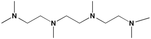
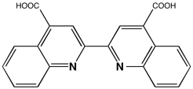
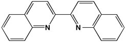
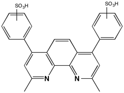

of the Me6Trien Ligand
Bisquinoline
MethyCarboxylate-Bisquinoline



relative to the Bisquinoline or or MethylCarboxylate-Bisquinoline ligand?
Structures of Cu(I) and Cu(II) Complexes
of Ligands Related to BCA
dmp = dimethyl phenanthroline


relative to the dmp ligand?
Structures of Cu(I) and Cu(II) Complexes
of Ligands Related to BCS